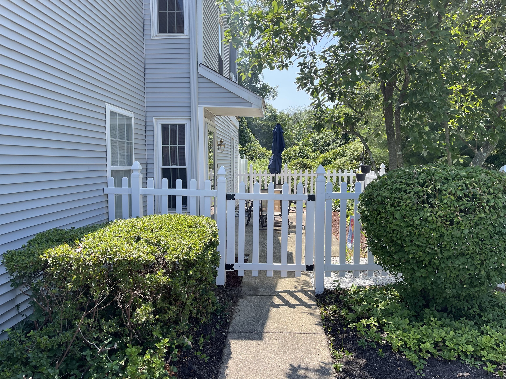
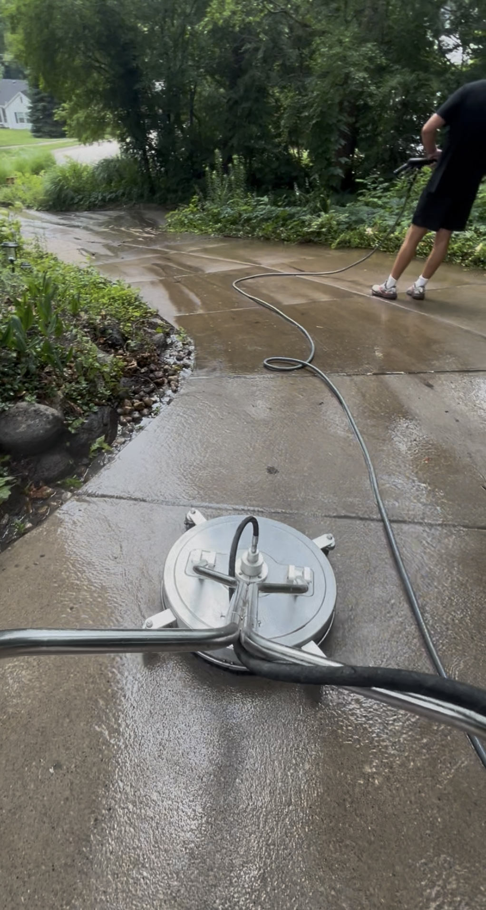
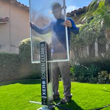

At WaterWerks, we specialize in transforming the exterior of your home or business with high-quality, reliable cleaning services. Whether you're dealing with dirt, algae, mildew, or general wear and tear, we bring surfaces back to life using safe and effective methods.
We offer a range of exterior cleaning services tailored to your property’s unique needs—from concrete and brick pressure washing to detailed exterior window and screen cleaning. Our goal is simple: make your home or building look its absolute best while protecting the materials that make it beautiful.
Explore our services below to see how WaterWerks can help restore and highlight your property’s appeal.




